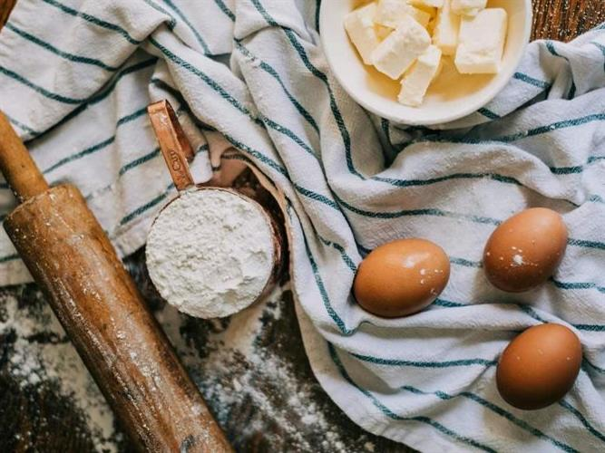
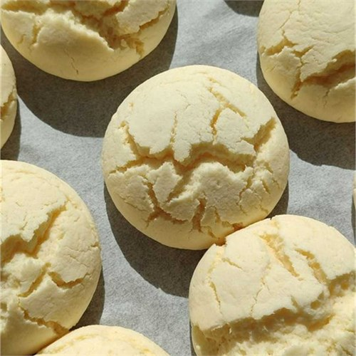
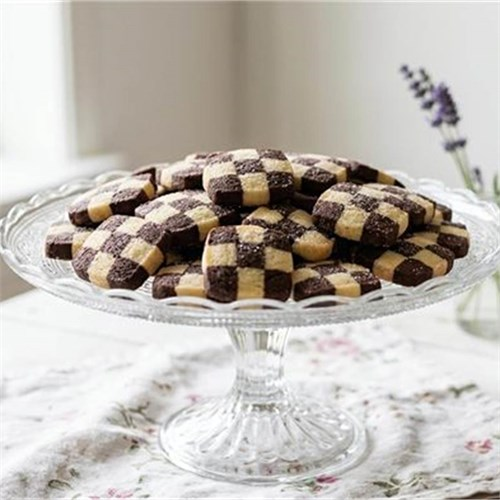
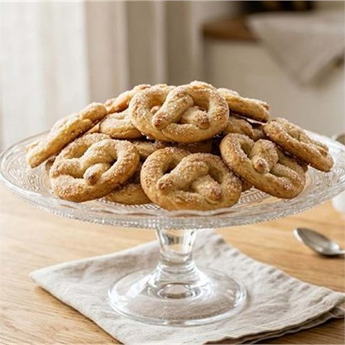

Att bjuda på sju sorters kakor är en klassisk svensk fikatradition och syftar på det minsta antalet
kaksorter som etiketten tidigare föreskrev att kakfatet ska innehålla. Tanken är att erbjuda ett
varierat urval av småkakor så att det finns något för olika smaker: spröda, mjuka, chokladiga,
kryddiga
och fruktiga kakor. Utöver småkakorna serveras även vetebröd och tårta. Traditionen förknippas ofta
med
kafferep och högtider men passar lika bra till vardagsfika eller kalas och har funnits sedan
1800-talet.

På den här sidan finns recept på sju småkakor att prova på!
Drömmar
Drömmar är mycket spröda småkakor med mild vaniljsmak som är lätta att baka. Hjorthornssalt gör
att
kakorna får sin karakteristiskt porösa och ljuvligt frasiga konsistens.

Ingredienser (ca 40–45 st)
100 g smör
3 dl strösocker
1 dl rapsolja
2 tsk vaniljsocker
1 tsk hjorthornssalt
4 dl vetemjöl
Gör så här
Sätt ugnen på 150 °C.
Rör smör och socker mjukt.
Tillsätt oljan, lite i taget, under vispning.
Blanda vaniljsocker och hjorthornssalt med lite av mjölet och rör ned blandningen i smeten.
Tillsätt sedan resten av mjölet.
Rulla små bollar av degen och lägg dem på plåtar med bakplåtspapper.
Grädda mitt i ugnen i cirka 15–20 minuter och låt kallna på plåten.
Schackrutor är klassiska småkakor med ett dekorativt rutmönster av ljus och chokladsmakande
mördeg.
Kakorna blir spröda och ser mycket läckra ut på kakfatet. De imponerar med sitt utseende men är
väldigt enkla att baka.

Ingredienser (ca 50 st)
200 g osaltat smör
1 dl strösocker
4,5 dl vetemjöl
Ljus deg
2 tsk vaniljsocker
Mörk deg
2 msk kakao
Gör så här
Ta fram smöret så att det hinner bli rumsvarmt.
Vispa ihop smör och socker till en jämn smet.
Tillsätt vetemjöl, lite i taget, och fortsätt röra tills det blir stora smulor.
Dela degen i två lika stora delar. Arbeta in kakaon i den ena delen och vaniljsocker i den
andra
så att du får en ljus och en mörk deg.
Dela degarna i två delar så du får två ljusa och två mörka delar.
Rulla ut till längder och tryck till dem mot bakbordet så längderna får platta kanter. Lägg
dem
tätt ihop, med två ovanpå de andra så de bildar ett litet schackmönster.
Låt vila i kylen 1–2 timmar.
Sätt ugnen på 200 °C. Ta fram längden och skär ca 3–4 mm tjocka skivor.
Lägg kakorna på en plåt med bakplåtspapper och grädda mitt i ugnen i ca 8–10 minuter.
Sockerkringlor är ett fikabröd gjort på en vetedeg som blir luftig och mjuk. Efter gräddning
penslas
de med mjölk eller vatten och garneras med pärlsocker.

Ingredienser (ca 20 st)
3½ dl vetemjöl
½ dl strösocker
1 tsk vaniljsocker
150 g mjukt smör
½ dl vispgrädde
Pensling och garnering
Mjölk eller vatten
Pärlsocker
Gör så här
Blanda det mesta av mjölet (lite sparas till utbakningen) med socker och vanilj. Finfördela
smöret i blandningen. Tillsätt grädden och blanda samman till en smidig deg.
Ställ in i kylen ca 30 minuter.
Rulla ut degen till lillfingertjocka längder. Skär i bitar, ca 18 cm långa. Forma till
kringlor
och lägg dem på plåt med bakplåtspapper.
Pensla kringlorna med mjölk eller vatten och strö på pärlsocker.
Grädda mitt i ugnen i 200 °C, ca 12 minuter, och låt sedan svalna på galler.